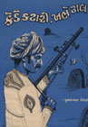
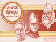

બાળસાહિત્ય
વતન, તારા રતન (૧૯૬૫) ; ડાહ્યો ડમરહો (૧૯૬૭) ; કેડે કટારી, ખભે ઢાલ (૧૯૬૯) ; બિરાદરી (૧૯૭૧) ; મોતને હાથતાળી (૧૯૭૩) ; ઝબક દીવડી (૧૯૭૫) ; હૈયું નાનું હિંમત મોટી (૧૯૭૬) ; પરાક્રમી રામ (૧૯૭૭) ; રામ વનવાસ (૧૯૭૭) સીતાહરણ (૧૯૭૭) ; વીરહનુમાન (૧૯૭૮) ; નાની ઉંમર, મોટું કામ (૧૯૭૮) ; ભીમ (૧૯૮૦) ; ચાલો પશુઓની દુનિયામાં, ૧-૨-૩, (૧૯૮૦) ; વહેતી વાતો (૧૯૮૩) ; મોતીની માળા (૧૯૯૦) ; વાતોના વાળુ (૧૯૯૩) ; ઢોલ વાગે ઢમાઢમ (૧૯૯૩) ; સાચના સિપાહી (૧૯૯૩) ; કથરોટમાં ગંગા (૧૯૯૩) |
||
લેખકનું બાળસાહિત્યનું આ પુસ્તક અનેક પારિતોષિકો પામ્યું છે. આમાં સત્ય ઘટનાઓનું આલેખન થયું છે. નાનાં બાળકોએ દેશ માટે દાખવેલી વીરતાનો પરિચય આમાં મળે છે. નાનાં બાળકોનું હૈયું ભલે નાનું છે, પણ એમનામાં કેટલી વિરાટ હિંમત હોય છે તે સમજાવતું આ પુસ્તક દેશભક્તિની ભાવના જગાવે છે. |
||
|  |
કચ્છના લોકોનાં ખમીર, આત્મસન્માન અને દેશ માટે મરી ફીટવાની તમન્ના – આ બધાં વિશે જાણવું હોય તો 'કેડે કટારી, ખભે ઢાલ'ની વાર્તાઓ વાંચવી જ પડે. આ વાર્તાઓ કચ્છપ્રદેશનાં ખમીર અને શૌર્યને જીવંત કરે છે.. |
|
|  |
આમાં ચાર વાર્તાઓ છે. ઠક્કરબાપા, પુરુષોત્તમ ટંડન, મોતીભાઈ અમીન અને રવિશંકર મહારાજના જીવનના પ્રસંગો છે. તેઓ સત્યના સિપાહી હતા. આ વ્યક્તિઓએ જે સેવા કરી તેના પ્રસંગો અહીં મૂક્યા છે. આ બધાના કેંદ્રમાં સત્યનિષ્ઠા છે. |
|
સત્તર કહેવતકથાઓનો સંગ્રહ છે. વાર્તાની ભાષા બાળકોની છે. બાળકોને સરળ રીતે કહેવતનો અર્થ સમજાઈ જાય તે રીતે અહીં આલેખવામાં આવેલી છે. આમાંથી સુંદર રીતે કહેવતકથાનો બોધ તારવવામાં આવ્યો છે. |
||
શ્રી કુમારપાળ દેસાઈનાં બાળસાહિત્યનાં પુસ્તકોની તરી આવતી વિશિષ્ટતા એ એમની ટૂંકાં ટૂંકાં વાક્યોવાળી છટાદાર શૈલી છે. બાળકોને વાર્તાના રસપ્રવાહમાં ખેંચી જવાની એમની પાસે અનોખી કુશળતા છે. એમનાં બાળસાહિત્યનાં પુસ્તકો જોતાં એક બીજી લાક્ષણિકતા પણ દેખાઈ આવે છે. કાલ્પનિક પાત્રોની તરંગલીલા કે પરીકથાઓની સૃષ્ટિને બદલે તેઓ ધરતીના નક્કર પાત્રને પોતાનો વિષય બનાવે છે. આવા વાસ્તવિક વિષયને લઈને રસપ્રદ કથાની રચના કરવી એ કોઈ પણ સર્જકને માટે પડકારરૂપ બને છે. એમનાં પુસ્તકોમાં માનવીય ખમીરનો ધબકાર અનુભવાય છે. પુસ્તકમાં જે હકીકતોનું બયાન કરે છે એની તેઓ પૂરેપૂરી ચકાસણી કરે છે. મોટે ભાગે તો એનું ચિત્ર આપીને વાસ્તવિકતા તાદ્રશ કરે છે. |